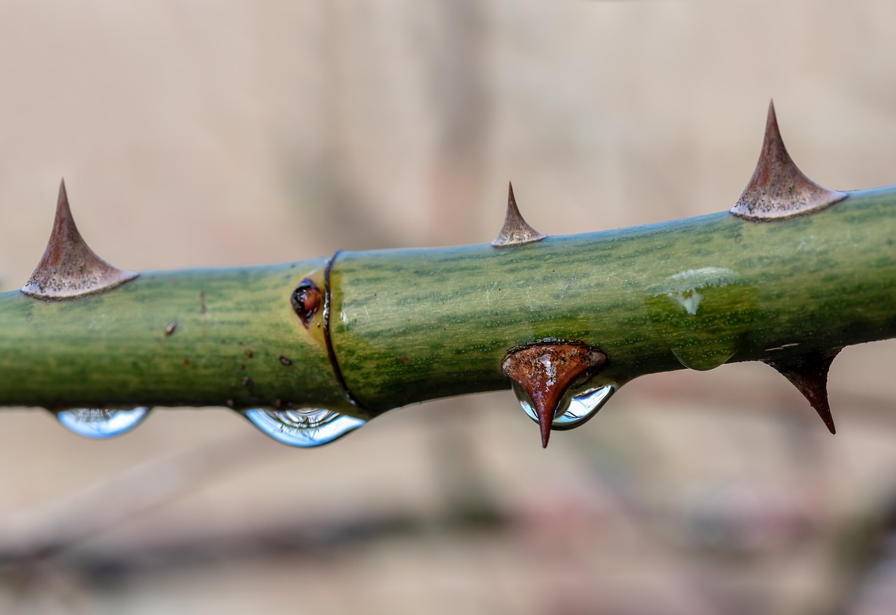

Back to Home
Roses

Myriam Zilles, Pixabay, Pixabay License
Roses are my least favorite flower because of their thorns. But I guess I can put some fun facts about them up here too.
- Roses are well known as symbols of love
- Roses are used in perfumes a lot because of their nice scent
- It is England's country flower and the state flower of four states in the United States.